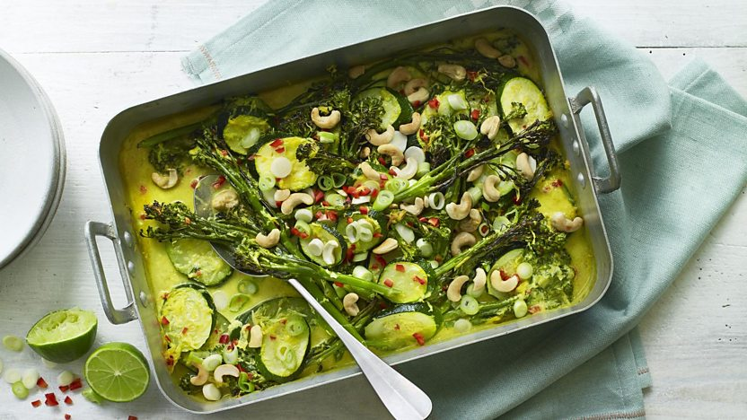
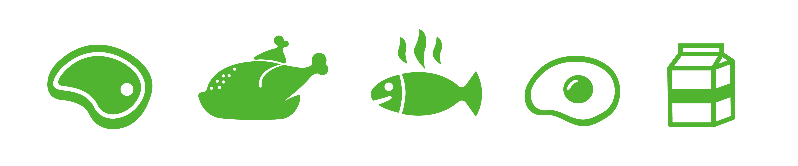
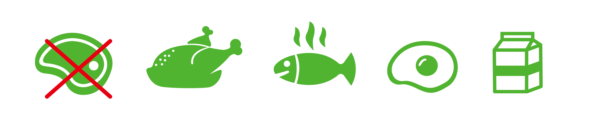
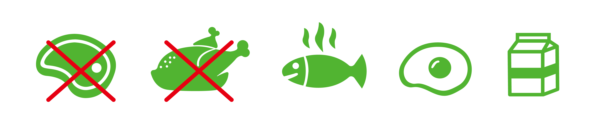
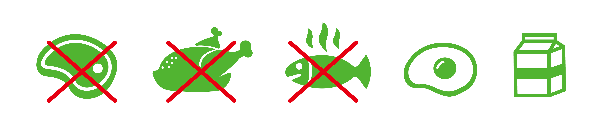
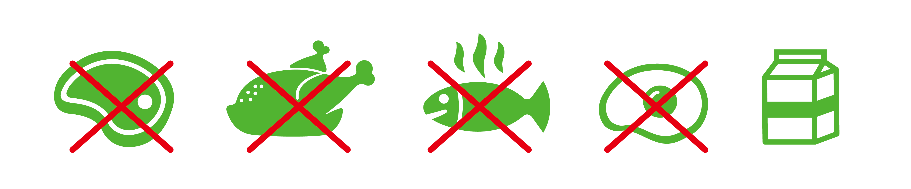
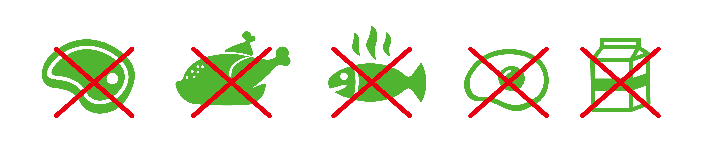

Vegan?
그게 뭔데?
다양한 이유로 동물성 제품을 섭취하지 않는 식습관 및 그러한 철학이다. 비건(Vegan) 식습관에 그치지 않고
가죽제품, 양모, 오리털, 동물 화학 실험을
하는 제품 등 동물성 제품 사용 등도 피하는 보다 적극적인 개념을
뜻할 수도 있다.
비거니즘에 동의해 동물성 제품 섭취 또는 사용을 피하는 사람을 비건(Vegan)이라 한다.
플렉시테리언
전반적으로 채식 위주의 식사를 하지만 경우에 따라서는 육류나 생선을 먹는 단계
세미
채식을 하면서 닭과 같은 가금류, 생선, 달걀, 유제품을 먹는 단계
페스코
채식을 하면서 생선, 달걀, 유제품은 먹는 단계
락토오보
전반적으로 채식 위주의 식사를 하지만 경우에 따라서는 육류나 생선을 먹는 단계
락토
달걀을 제외한 유제품까지는 먹는 단계
비건
동물에게서 나온, 혹은 동물 실험을 거친 식품을 모두 먹지 않는 단계
